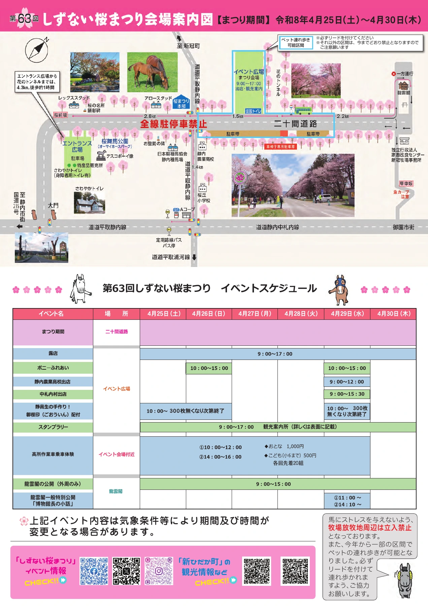

2026年の開催概要
期間は4月25日（土）〜30日（木）。会場は二十間道路桜並木の花のトンネルに隣接するイベント広場。露店・観光案内所は9:00〜17:00の案内です。入場無料。
当初予定より4日早い開催に
桜並木の案内サイトでは、当初予定を4日早めた6日間の開催と説明されています。このページでは変更後の日付を採用しています。
春の楽しみ
周遊スタンプラリー、高所作業車の乗車体験、静内高校生による御桜印の配布などが案内されました。実施日や受付条件は、下の2026年イベントスケジュールをご覧ください。
会場利用の案内も年ごとに確認
2026年はペットを連れて歩ける区間が一部設けられ、リードの着用が案内されています。牧場放牧地の周辺は立入禁止です。ここに載せる条件は2026年当時のものです。
写真・資料で知る
町公式サイト掲載の2026年チラシです。画像を押すと拡大できます。PDF資料は画像化し、文字や日付が切れないよう全体を掲載しています。

公式情報・資料の出典
Web確認日：2026年10月19日。2026年の開催記録として掲載しています。掲載画像はサイト運営者の利用許可に基づき使用しています。